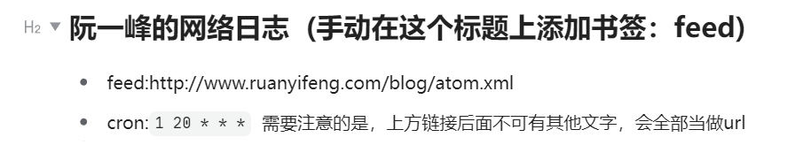
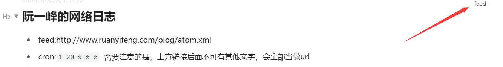
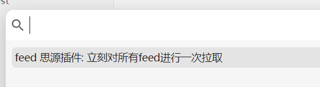
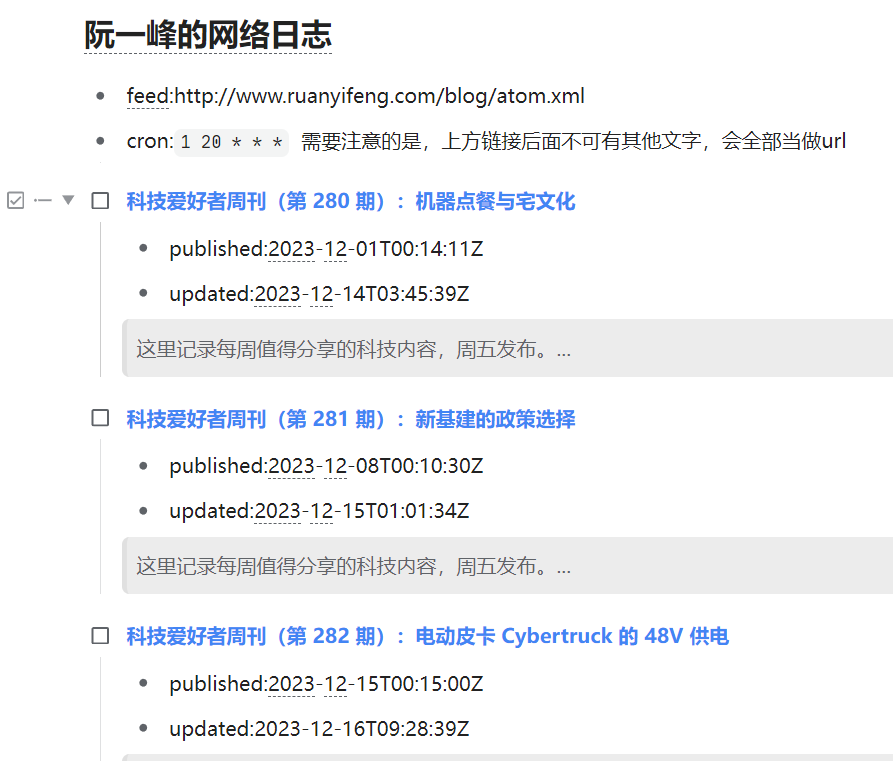
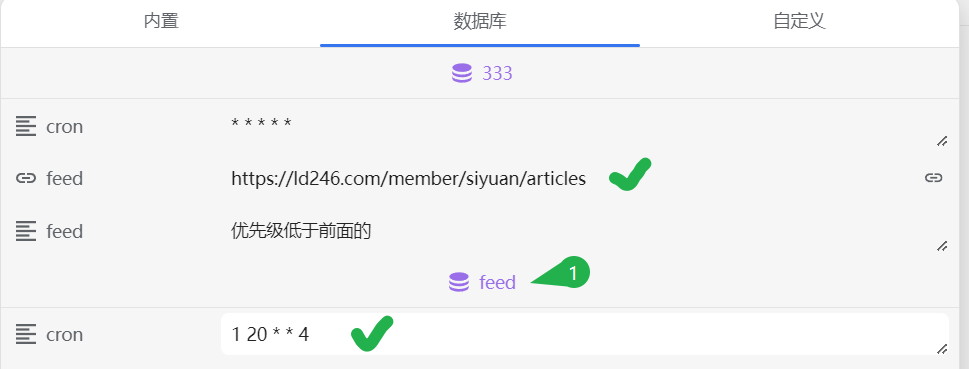
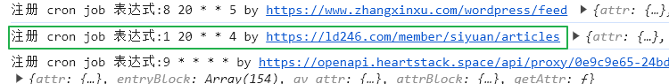

siyuan_feed插件

当前在某些情况下会导致内存泄漏问题，慎用！！ https://github.com/siyuan-note/siyuan/issues/15409
入门文档
直接导入示例： 阮一峰的网络日志.sy.zip 或者复制下方文本，以markdown的形式粘贴到思源笔记内（注意添加feed书签）
md
## 阮一峰的网络日志 (手动在这个标题上添加书签：feed)
* feed:http://www.ruanyifeng.com/blog/atom.xml
* cron:`1 20 * * *` 需要注意的是，上方链接后面不可有其他文字，会全部当做url
现在你应该能得到：

给标题添加书签 feed ，得到：

同时按下 shift+alt+p 运行下面这个命令

现在你应该能看到

如果没有看见的话请尝试按 F5 刷新一下当前页面，还不行的话联系我吧：子虚的联系方式
扩展操作： 通过嵌入块 sql 查询未读文档 、 通过数据库来定义属性
进阶文档
1.
对任意一个容器块添加 feed 书签
2.
该容器块内再创建一个容器块 (假设叫做列表X)
1.
列表X以 feed: 开头的子块声明了 feed 的链接地址，这是必填的
2.
列表X以 timeout: 开头的子块声明了请求该 feed 的超时时间，单位为 ms 默认为 10000 （十秒）
3.
列表X以 customParse: 开头的子块声明一个自定义的解析器，可以参照 太郎-龙逸楠的博客 处的实现
这需要你具有一定的编程能力，实现代码可见 https://github.com/2234839/feed_siyuan_plugin/issues/2 的相关提交代码
有网友询问：
请问如果一个单纯的 html 网页，不提供 json 或 xml 格式的数据，应该怎么写 customParse 呢？能否提供一个例子？谢谢！
可以的！请看： 思源更新了吗
https://rsshub.app/ 对于很多不支持rss的网站提供了聚合链接，在这里找找有么有你想订阅的网站
4.
列表X以 cron: 开头的子块声明什么时候对该链接进行更新检查
5.
例如下方的列表块就是一个以 feed: 开头的容器块并且声明了链接地址和更新时间（每天晚上八点1分检查一次），
简单来说 feed 和 cron 应该是同一个列表中的不同的列表项
feed:http://www.ruanyifeng.com/blog/atom.xml
cron:1 20 * * * 需要注意的是，上方链接后面不可有其他文字，会全部当做url
此属性是可选的，插件会采取默认值 1 * * * * 每小时的第一分钟进行一次检查，表达式语法如下
bash
* * * * *
| | | | |
| | | | +----- 星期几 (1 - 7) (星期天为 7)
| | | +------- 月份 (1 - 12)
| | +--------- 日期 (1 - 31)
| +----------- 小时 (0 - 23)
+------------- 分钟 (0 - 59)
注意！！这个 cron 表达式仅支持数字和*表达，不支持更高级的特性
3.
会从 feed 链接获取数据和本地数据比对之后，将本地没有的新更新的文章都会放置在容器块A:对任意一个容器块添加 feed 书签 的子容器块B：在他的子块中创建一个以 feed: 开头的容器块 的后侧
4.
通过嵌入块 sql 查询未读文档
1.
所有订阅文章的 md 都是以 * [ ] ##... 或 * [X] ##... 开头的（所以不要随意改动插件生成的文档，否则可能重复生成)
2.
熟悉sql的一下子就能够知道我们只要查询具有 feed 书签的块的子块并且该子块以 * [ ] ##... 开头即是未读文档
3.
然后通过 询问 ChatGPT 得到如下 sql
1.
sql
SELECT *
FROM (
SELECT b.*
FROM blocks AS b
JOIN attributes AS a ON b.parent_id = a.block_id
WHERE a.name = "bookmark" AND a.value = "feed"
) AS subquery
WHERE subquery.markdown LIKE '* [ ] #%'
ORDER BY created DESC
4.
将该sql复制到嵌入块的查询语句中即可得到如下效果，主要获取了 标题、链接、发布时间、更新时间、摘要，然后如果阅读后有什么感想也可以记在该标题块的最后面

5.
在阅读完文章之后勾选标题前面的任务框，等待思源笔记更新嵌入块即完成了一整套使用思源笔记订阅 rss 源的过程
通过数据库来定义属性
如下图所示，在多数据库的情况下数据库名为 feed 的具有高优先级，然后排在前面的优先级高于后面的


如果没有在文档中定义以 feed: 开头的容器块的话，所有文章都会插入到具有feed书签的块之后，可以定义一个 feed: （这里不写链接，在数据库中定义）容器块来控制文章插入的位置。
支持命令
示例
其他
https://rsshub.app/ 对于很多不支持rss的网站提供了聚合链接，在这里找找有么有你想订阅的网站
更新日志
v1.1.11 不兼容更新
支持使用数据库属性来替代块声明 feed_siyuan_plugin/issues/3 ，doc： 通过数据库来定义属性
不兼容 customParse 的第一个参数的值发生了变化，如果使用到了该参数则需要修改
升级方案： 假设第一个参数名为 attr ,请修改为 feedDoc , 然后在函数内添加 const attr = feedDoc.attr 即可兼容原有代码
v.0.0.9
解决控制台报错 name 重定义。更新 logo。
v0.0.8
新增customParse属性配置 feed_siyuan_plugin/issues/2
v0.0.7
新增timeout属性配置 feed_siyuan_plugin/issues/1
v0.0.6
修改请求实现，支持网页端 741aae44
2023-12-16
手动测试 feed：
https://yifei.me/feed
https://www.zhangxinxu.com/wordpress/feed
添加了对 rss 2.0 的简易支持
增强了xss过滤功能
插件添加命令 _feedFetch 立刻对所有feed进行一次拉取